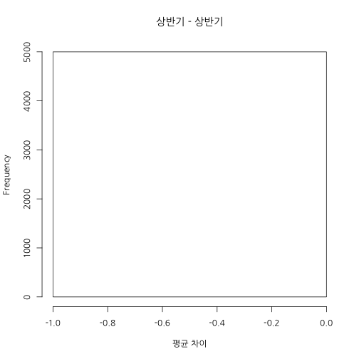

학습 목표
데이터 편집하기
Missing 다루기
집단 평균 비교하기
상관관계 이해하기
김형준
Analytic Director / (주) 퀀트랩 / kim@mindscale.kr
데이터 편집하기
Missing 다루기
집단 평균 비교하기
상관관계 이해하기
## 'data.frame': 2520 obs. of 5 variables:
## $ 매출월 : int 1 1 1 1 1 1 1 1 1 1 ...
## $ 요일 : chr "월" "화" "수" "목" ...
## $ 점포 : chr "a" "b" "c" "d" ...
## $ 성별 : chr "남" "여" "남" "여" ...
## $ 구매건수: chr "21451" "24922" "." "13720" ...
df <- read.csv("data/salesC.csv", fileEncoding = "CP949", stringsAsFactors = F, na.strings = c(".", "#"))
str(df)
## 'data.frame': 2520 obs. of 5 variables:
## $ 매출월 : int 1 1 1 1 1 1 1 1 1 1 ...
## $ 요일 : chr "월" "화" "수" "목" ...
## $ 점포 : chr "a" "b" "c" "d" ...
## $ 성별 : chr "남" "여" "남" "여" ...
## $ 구매건수: int 21451 24922 NA 13720 NA NA NA NA 17081 NA ...
table(df$성별)
##
## 남 여
## 1260 1260
table(df$요일)
##
## 금 목 수 월 일 토 화
## 360 360 360 360 360 360 360
table(df$점포)
##
## a b c d e f g h i j k l m n o
## 168 168 168 168 168 168 168 168 168 168 168 168 168 168 168
df.first <- subset(df, 매출월 <= 6 )
mean(df.first$구매건수)
## [1] NA
mean(df.first$구매건수, na.rm = T)
## [1] 24707.54
df.latter <- subset(df, 매출월 > 6 )
mean(df.latter$구매건수, na.rm = T)
## [1] 24560.92
hist(df.first$구매건수, xlab = "구매건수", main = "상반기")

hist(df.latter$구매건수, xlab = "구매건수", main = "하반기")
library(bootstrap)
상반기 <- na.omit(df.first$구매건수)
하반기 <- na.omit(df.latter$구매건수)
hist(bootstrap(상반기, 5, mean)$thetastar - bootstrap(하반기, 5, mean)$thetastar, main = "상반기 - 하반기", xlab = "평균 차이")

hist(bootstrap(상반기, 5000, mean)$thetastar - bootstrap(하반기, 5000, mean)$thetastar, main = "상반기 - 하반기", xlab = "평균 차이")

hist(bootstrap(상반기, 5000, mean)$thetastar - bootstrap(상반기, 5000, mean)$thetastar, main = "상반기 - 상반기", xlab = "평균 차이")

hist(bootstrap(상반기, 5000, mean)$thetastar - bootstrap(하반기, 5000, mean)$thetastar, main = "상반기 - 하반기", xlab = "평균 차이")
hist(bootstrap(상반기, 5000, mean)$thetastar - bootstrap(상반기, 5000, mean)$thetastar, main = "상반기 - 상반기", xlab = "평균 차이")

var.test(df.first$구매건수, df.latter$구매건수)
##
## F test to compare two variances
##
## data: df.first$구매건수 and df.latter$구매건수
## F = 0.9605, num df = 1211, denom df = 1217, p-value = 0.4824
## alternative hypothesis: true ratio of variances is not equal to 1
## 95 percent confidence interval:
## 0.8582286 1.0749026
## sample estimates:
## ratio of variances
## 0.9604674
t.test(df.first$구매건수, df.latter$구매건수)
##
## Welch Two Sample t-test
##
## data: df.first$구매건수 and df.latter$구매건수
## t = 0.2484, df = 2427.437, p-value = 0.8039
## alternative hypothesis: true difference in means is not equal to 0
## 95 percent confidence interval:
## -1011.026 1304.273
## sample estimates:
## mean of x mean of y
## 24707.54 24560.92
df.high <- df[df$구매건수 >= quantile(df$구매건수, probs = .9, na.rm = T), ]
mosaicplot(df.high$성별 ~ df.high$요일,
main="성별 by 요일", shade=F,
color = 1:7, xlab="성별", ylab="요일")
mosaicplot(df.high$성별 ~ factor(df.high$요일, levels=c("월", "화", "수", "목", "금", "토", "일")),
main="성별 by 요일", shade=F,
color = 1:7, xlab="성별", ylab="요일")

df.sunday <- subset(df, 요일 == "일")
var.test(구매건수 ~ 성별, df.sunday)
##
## F test to compare two variances
##
## data: 구매건수 by 성별
## F = 0.8389, num df = 175, denom df = 174, p-value = 0.2469
## alternative hypothesis: true ratio of variances is not equal to 1
## 95 percent confidence interval:
## 0.6228691 1.1297685
## sample estimates:
## ratio of variances
## 0.8389209
t.test(구매건수 ~ 성별, df.sunday)
##
## Welch Two Sample t-test
##
## data: 구매건수 by 성별
## t = -1.1314, df = 345.989, p-value = 0.2587
## alternative hypothesis: true difference in means is not equal to 0
## 95 percent confidence interval:
## -4849.027 1307.565
## sample estimates:
## mean in group 남 mean in group 여
## 23469.91 25240.64
x = 1:10; y = c(1,3,2,4,5,6,7,9,8,10);
plot(x, y)

cor(x,y)
## [1] 0.9757576
x = 1:10; y = c(5,10,1,6,4,3,7,9,8,3);
plot(x, y)

cor(x,y)
## [1] 0.06297909
df$요일 <- factor(df$요일, levels = c("월", "화", "수", "목", "금", "토", "일"))
df.month <- sapply(split(df, df$요일), function(x) x$구매건수)
cor(df.month, use = "pairwise")
## 월 화 수 목 금
## 월 1.000000000 0.016154311 0.064546369 0.079406578 0.040402692
## 화 0.016154311 1.000000000 0.023626917 0.042367660 -0.009842181
## 수 0.064546369 0.023626917 1.000000000 -0.013638866 -0.008021839
## 목 0.079406578 0.042367660 -0.013638866 1.000000000 0.023752689
## 금 0.040402692 -0.009842181 -0.008021839 0.023752689 1.000000000
## 토 0.004223453 -0.027353194 0.061731302 -0.007748214 0.006334015
## 일 0.076669320 0.007060764 0.070943490 -0.073613125 0.050797953
## 토 일
## 월 0.004223453 0.076669320
## 화 -0.027353194 0.007060764
## 수 0.061731302 0.070943490
## 목 -0.007748214 -0.073613125
## 금 0.006334015 0.050797953
## 토 1.000000000 -0.038389203
## 일 -0.038389203 1.000000000
cor(df.month, use = "complete")
## 월 화 수 목 금
## 월 1.00000000 0.0366655752 0.068360252 0.045381720 0.037236477
## 화 0.03666558 1.0000000000 -0.027486150 0.047392569 -0.008406188
## 수 0.06836025 -0.0274861497 1.000000000 -0.022420601 -0.003601449
## 목 0.04538172 0.0473925688 -0.022420601 1.000000000 0.004998727
## 금 0.03723648 -0.0084061876 -0.003601449 0.004998727 1.000000000
## 토 -0.01620401 0.0006739636 0.052459921 0.002555485 -0.018476615
## 일 0.07846102 0.0258780356 0.076646880 -0.046833326 0.060122104
## 토 일
## 월 -0.0162040109 0.07846102
## 화 0.0006739636 0.02587804
## 수 0.0524599207 0.07664688
## 목 0.0025554848 -0.04683333
## 금 -0.0184766145 0.06012210
## 토 1.0000000000 -0.04842320
## 일 -0.0484231989 1.00000000